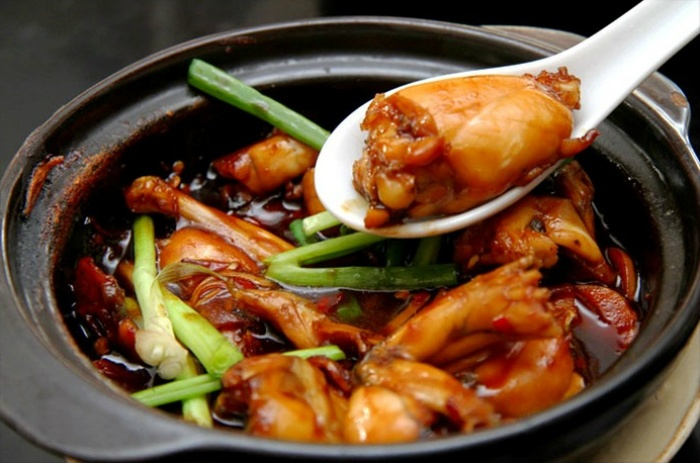
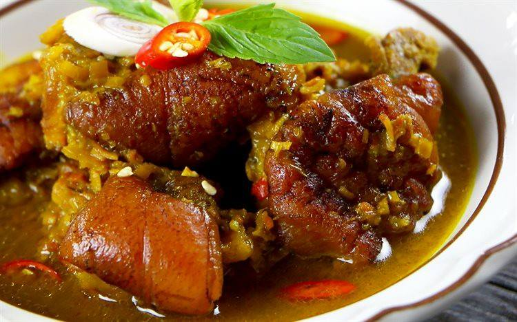

Ếch nấu cay

Om mẻ
Phần giới thiệu món ăn
Ếch xào cay - Món ngon từ ếch
Ếch xào cay - Món ngon từ ếch - cách chế biến ếch đơn giản, ngon và bổ cho gia đình bạn thêm hạnh phúc! Nên dùng chảo không dính để chế biến dễ hơn và món ăn cũng ngon hơn.
Nguyên liệu:
- 300g ếch đã làm sạch
- 100g hành tây
- 5g ớt hiểm khô
- 50g lạc (đậu phộng) rang
- 2 cọng hành lá
- Dầu ăn.gia vị gồm: 2 thìa súp tương ớt
- 1 thìa súp hắc xì dầu
- 1 thìa súp nước tương
- 1 thìa súp đường
- 1 thìa cà-phê hạt nêm.
Các bước thực hiện:
1
Ếch chặt miếng vừa ăn. Hành tây cắt miếng vuông. Hành lá cắt khúc.
2
Cho chảo lên bếp, đổ nhiều dầu vào chảo. Dầu nóng, cho ếch vào chiên vàng. Lấy ếch ra, để ráo dầu.
3
Cho vào thố 1 thìa dầu ăn, hành tây, ớt hiểm khô và gia vị, trộn đều. Tiếp theo, cho ếch vào. Cuối cùng, cho hành lá, lạc rang vào, trộn đều.
4
Dọn ra đĩa, dùng nóng với cơm trắng
Nguyên liệu cần chuẩn bị để làm món thịt heo nấu giả cầy
Chân giò heo: 1 cái
Măng củ: 200gr
Bún: 1 kg
Riềng: 1 củ
Sả: 3 cây
Húng tươi: 4 cây
Mẻ: 1 chén nhỏ
Mắm tôm: 1 chén nhỏ
Bột nghệ: 1 muỗng
Hạt nêm, đường, muối, nước mắm và dầu ăn.